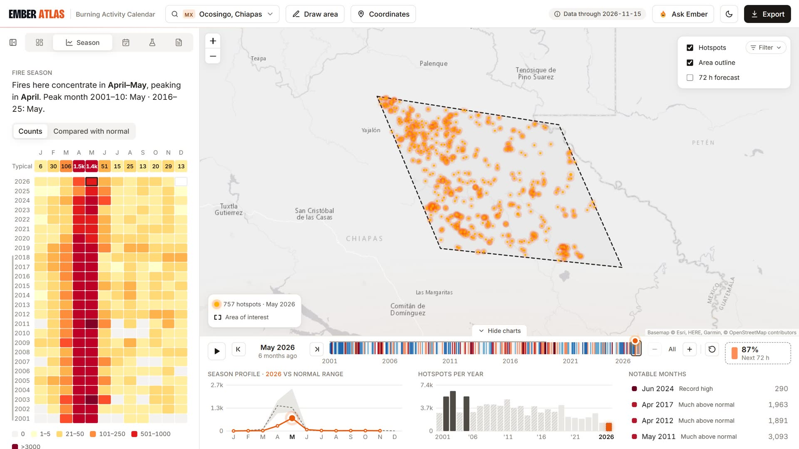
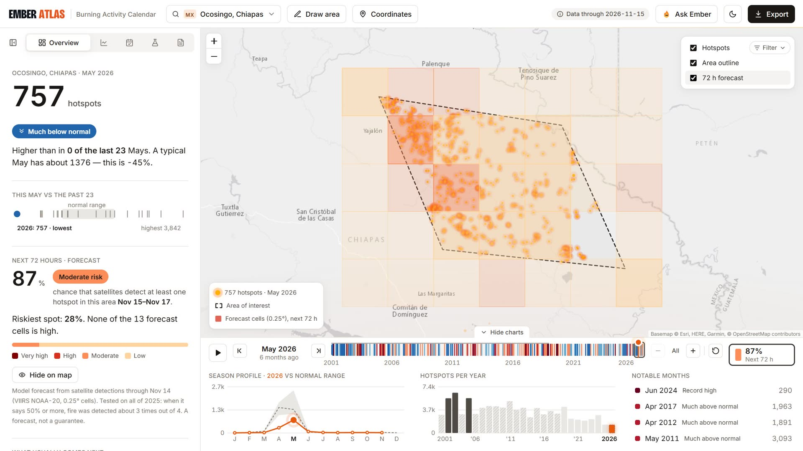

One burning calendar from 25 years of MODIS and VIIRS, for any area in Mexico and the US.

01 · The problem
Same fires, 4.3× the hotspots
Join MODIS and VIIRS end to end and fire seems to explode in 2012. It didn't: a sharper satellite arrived.
02 · Our solution
Pick an area. Read 25 years.
- Choose a municipality, draw or drop a pinAny polygon, Mexico and the US
- Every month since 2001, one scaleCompared with its normal range
- Unusual months stand outFrom “much below” to “record high”

03 · How and how well
One factor per month, tested
typical error on the yearly total, each year left out (worst 11.6%)
monthly correlation with 77,420 fires reported by CONAFOR
MODIS and VIIRS see the same seasons (monthly r)
AUC of our 72 h forecast on all of 2025
04 · In the app
History, next 72 h, plain answers

Burning calendar
Month × year since 2001: the fire season at a glance.

72 h forecast
Chance of fire in the area, AUC 0.91 on 2025.
Ask Ember
Explains the numbers on screen. Plus CSV, PNG and a one-page report.
05 · Who it helps
Is this month normal?
- MunicipalitiesSet the yearly burn dates with their own fire historyRequired by NOM-015-SEMARNAT-AGRICULTURA-2023
- Civil protection & CONAFORSee a bad season coming and plan crews
- Land managers & researchersA 25-year series with no sensor jump
06 · Next
Live today, growing tomorrow
Working now
- emberatlas.ink, refreshed daily from FIRMS
- Harmonized calendar with an uncertainty band
- 72 h forecast, exports and Ember
Next
- Alerts when a month leaves its normal range
- Regional factors and more countries
- Pilot with a municipality
Team A11
José Ángel Ipiña
Abiel Jefté Ramírez
Data: NASA FIRMS (MODIS, VIIRS), CONAFOR, NIFC. AI tools helped with code, data and text, and Ember runs on an LLM; the team reviewed all of it (README).